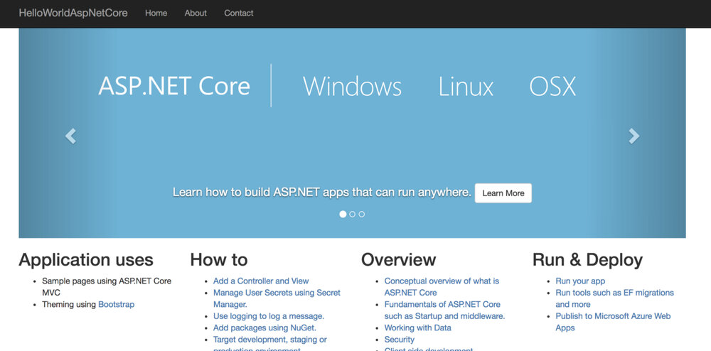
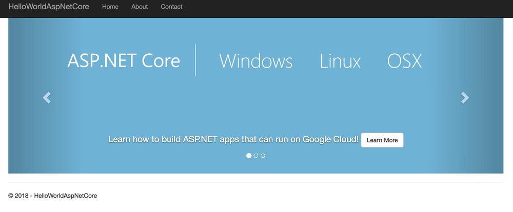

本文为翻译文章，点击查看原文。
当学习像Istio这样的新技术时，我推荐看一看项目自带的示例。Istio包含了一些示例程序，但都有各种各样的不足。比如说BookInfo就是很好的一个应用。但是对我来说，它太冗长，服务太多，而且文档似乎专注于管理BookInfo应用程序，而不是从头构建。另外还有一个小一点的示例-helloworld，但是它仅关注于自动伸缩。
在这篇文章中，我想从基础讲起，并向您展示如何从头开始构建支持Istio的“HelloWorld”应用程序。要记住的一点是，Istio只管理您应用的流量，应用程序生命周期由底层平台Kubernetes管理。因此，您需要了解容器和Kubernetes基础知识，并且需要了解Istio 路由原语，例如Gateway，VirtualService，DestinationRule。我假设大多数人都知道容器和Kubernetes基础知识。我将在本文中专注于介绍Istio 路由。
基本步骤
这些大致是创建Istio “HelloWorld”应用程序的步骤：
- 创建一个Kubernetes集群并安装带有自动sidecar注入的Istio。
- 使用您选择的语言创建一个HelloWorld应用程序，基于这个程序创建一个Docker镜像并将其推送到公共镜像存储库。
- 为容器创建Kubernetes Deployment和Service。
- 创建Gateway以启用到集群的HTTP（S）流量。
- 创建VirtualService以通过Gateway公开Kubernetes服务。
- （可选）如果要创建应用程序的多个版本，请创建DestinationRule以定义可从VirtualService引用的子集。
- （可选）如果要从服务网格调用外部服务，请创建ServiceEntry。
我不会在本文中介绍步骤1和2，因为它们不是Istio特有的。 如果您需要有关这些步骤的帮助，可以查看我在本文末尾提到的codelabs。 第3步也不是Istio特定的，但它是其他一切的先决条件，所以我们从那开始。
Deployment和Service
正如我所提到的，应用程序生命周期由Kubernetes管理。 因此，您需要从创建Kubernetes Deployment和Service开始。我有一个容器化的ASP.NET核心应用程序，容器镜像我已经推送到谷歌容器注册表。让我们从创建一个aspnetcore.yaml文件开始：
apiVersion: v1
kind: Service
metadata:
name: aspnetcore-service
labels:
app: aspnetcore
spec:
ports:
- port: 8080
name: http
selector:
app: aspnetcore
---
apiVersion: extensions/v1beta1
kind: Deployment
metadata:
name: aspnetcore-v1
spec:
replicas: 1
template:
metadata:
labels:
app: aspnetcore
version: v1
spec:
containers:
- name: aspnetcore
image: gcr.io/istio-project-212517/hello-dotnet:v1
imagePullPolicy: Always #IfNotPresent
ports:
- containerPort: 8080
创建deployment和service:
$ kubectl apply -f aspnetcore.yaml
service "aspnetcore-service" created
deployment.extensions "aspnetcore-v1" created
到现在为止还没有专门讲到Istio。
Gateway
我们现在可以回到Istio路由了。首先，我们需要为服务网格启用HTTP/HTTPS流量。 为此，我们需要创建一个Gateway。 Gateway描述了在网络边缘运行的负载均衡器，用于接收传入或传出的HTTP / TCP连接。
让我们创建一个aspnetcore-gateway.yaml文件：
apiVersion: networking.istio.io/v1alpha3
kind: Gateway
metadata:
name: aspnetcore-gateway
spec:
selector:
istio: ingressgateway # use istio default controller
servers:
- port:
number: 80
name: http
protocol: HTTP
hosts:
- "*"
创建Gateway：
$ kubectl apply -f aspnetcore-gateway.yaml
gateway.networking.istio.io "aspnetcore-gateway" created
我们已经为集群启用了HTTP流量。 我们需要将之前创建的Kubernetes服务映射到Gateway。我们将使用VirtualService执行此操作。
VirtualService
VirtualService实际上将Kubernetes服务连接到Istio网关。它还可以执行更多操作，例如定义一组流量路由规则，以便在主机被寻址时应用，但我们不会深入介绍这些细节。
让我们创建一个aspnetcore-virtualservice.yaml文件：
apiVersion: networking.istio.io/v1alpha3
kind: VirtualService
metadata:
name: aspnetcore-virtualservice
spec:
hosts:
- "*"
gateways:
- aspnetcore-gateway
http:
- route:
- destination:
host: aspnetcore-service
请注意，VirtualService与特定网关绑定，并定义引用Kubernetes服务的主机。
创建VirtualService：
$ kubectl apply -f aspnetcore-virtualservice.yaml
virtualservice.networking.istio.io "aspnetcore-virtualservice" created
测试app v1版本
现在可以开始测试我们的应用了，首先需要拿到Istio Ingress Gateway的外部IP地址。
$ kubectl get svc istio-ingressgateway -n istio-system
NAME TYPE CLUSTER-IP EXTERNAL-IP
istio-ingressgateway LoadBalancer 10.31.247.41 35.240.XX.XXX
当我们用浏览器访问外部地址时，我们应该看到HelloWorld ASP.NET Core程序。

DestinationRule
在某些时候，您希望将应用更新为新版本。 也许你想分割两个版本之间的流量。 您需要创建一个DestinationRule来定义那些版本，在Istio中称为子集。
首先，更新aspnetcore.yaml文件，用v2版本的容器来定义v2的部署（Deployment）：
apiVersion: v1
kind: Service
metadata:
name: aspnetcore-service
labels:
app: aspnetcore
spec:
ports:
- port: 8080
name: http
selector:
app: aspnetcore
---
apiVersion: extensions/v1beta1
kind: Deployment
metadata:
name: aspnetcore-v1
spec:
replicas: 1
template:
metadata:
labels:
app: aspnetcore
version: v1
spec:
containers:
- name: aspnetcore
image: gcr.io/istio-project-212517/hello-dotnet:v1
imagePullPolicy: Always #IfNotPresent
ports:
- containerPort: 8080
---
apiVersion: extensions/v1beta1
kind: Deployment
metadata:
name: aspnetcore-v2
spec:
replicas: 1
template:
metadata:
labels:
app: aspnetcore
version: v2
spec:
containers:
- name: aspnetcore
image: gcr.io/istio-project-212517/hello-dotnet:v2
imagePullPolicy: Always #IfNotPresent
ports:
- containerPort: 8080
创建一个新的部署（Deployment）:
$ kubectl apply -f aspnetcore.yaml
service "aspnetcore-service" unchanged
deployment.extensions "aspnetcore-v1" unchanged
deployment.extensions "aspnetcore-v2" created
如果刷新浏览器，你可以看到VirtualService 在v1 和v2 版本之间切换:

这个结果是预料之中的，因为这两个版本都暴露在相同的Kubernetes服务之后：aspnetcore-service。
如果您想将服务仅限于v2该怎么办？ 可以通过在VirtualService中指定子集来完成，但我们需要首先在DestinationRules中定义这些子集。 DestinationRule本质上将标签映射到Istio子集。
创建一个aspnetcore-destinationrule.yaml文件：
apiVersion: networking.istio.io/v1alpha3
kind: DestinationRule
metadata:
name: aspnetcore-destinationrule
spec:
host: aspnetcore-service
trafficPolicy:
tls:
mode: ISTIO_MUTUAL
subsets:
- name: v1
labels:
version: v1
- name: v2
labels:
version: v2
创建DestinnationRule:
$ kubectl apply -f aspnetcore-destinationrule.yaml
destinationrule.networking.istio.io "aspnetcore-destinationrule" created
现在，你可以在VirtualService指向v2子集:
apiVersion: networking.istio.io/v1alpha3
kind: VirtualService
metadata:
name: aspnetcore-virtualservice
spec:
hosts:
- "*"
gateways:
- aspnetcore-gateway
http:
- route:
- destination:
host: aspnetcore-service
subset: v2
更新VirtualService:
$ kubectl apply -f aspnetcore-virtualservice.yaml
virtualservice.networking.istio.io "aspnetcore-virtualservice" configured
现在再刷新浏览器，你应该只会看到v2版本的内容了。
ServiceEntry
最后我大概提一下ServiceEntry。所有外部流量在Istio中都是默认被阻断了的，如果你需要启用外部流量就需要创建一个ServiceEntry来列出所有的已经启用外部流量的协议和主机。你可以从这里了解更多信息，我在这篇文章中就不多做阐述了。
希望这篇文章对你有所助益！如果你还想了解更多，这里有一个系列更详细的阐述了这篇文章提到的所有概念和解释：